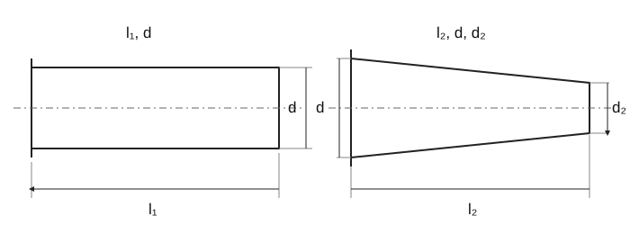

Концы валов · исторические размеры
CS
EN
DE
FR
RU

Собственная поясняющая схема; не нормативный производственный чертёж. Обозначения относятся к показанному типу; не все параметры таблицы изображены.
Нормативный контекст концов валов
Концы валов · исторические размеры
Обозначение
Значение
ISO/R 775:1969
Цилиндрические и конические концы 1:10; стандарт отменён, прямая действующая замена ISO не установлена.
Концы валов · схема
Концы валов · исторические размеры
Обозначение
Значение
d
Диаметр вала
l₁, l₂
Длина цилиндрического / конического конца
d₂
Малый диаметр конического конца
Размеры цилиндрических и конических концов валов
Предельные отклонения углов конических концов валов
Кручение сплошного вала · расчёт